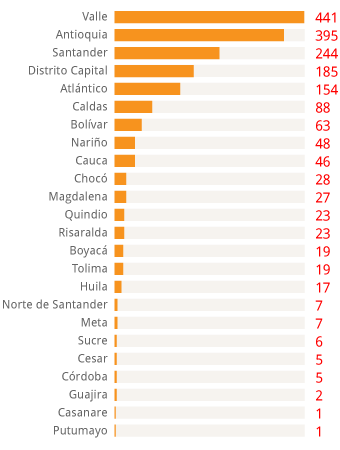

Asesoría y apoyo

Apoyo a personas fuera de Bogotá
Hace seis años, creamos el Programa Semillero de Talentos Regionales, que tiene como objetivo lograr una mayor participación de estudiantes, recién egresados, profesores con excelencia académica de universidades públicas o privadas de fuera de Bogotá, que quieran adelantar sus estudios de posgrado en el exterior.
Desde entonces, más de 1.800 estudiantes, egresados y profesores destacados han contado con nuestro apoyo en el proceso de búsqueda, preparación y postulación a un programa de posgrado de alta calidad en el exterior. Los estudiantes que hacen parte de este grupo cuentan con talleres, charlas, actividades de orientación, información personalizada sobre programas y ayudas financieras para estudios de posgrado.
El semillero tiene prioridad sobre estudiantes o egresados de Ingeniería, Ciencias de la Salud, Ciencias Básicas, Economía, Ciencias Sociales y Educación.
Requisitos para postularse al programa
- Ser un estudiante destacado académicamente.
- Ser profesor de una universidad colombiana de fuera de Bogotá.
- Haberse graduado en los últimos 4 años o estar cursando los últimos dos semestres de carrera.
- Estar interesado en realizar un posgrado en el exterior.
- Cumplir con una o más de las definiciones de excelencia académica.
- COLFUTURO entiende por excelencia académica:
- - Estar en el 5% superior de los mejores estudiantes de su promoción.
- - Tesis meritoria / laureada.
- - Mejor ECAES, estar en el 10% superior de la calificación del examen.
- - Haber tenido matrícula o semestre de honor, premios, honores o distinciones.
- - Pertenecer a un grupo de investigación.
Cómo postularse
- A través de la oficina de Oficina de Relaciones Internacionales de su Universidad o Facultad.
- Diligenciando el formulario de inscripción.
Convenios establecidos
COLFUTURO ha realizado alianzas y convenios con entidades educativas nacionales e internacionales, para obtener beneficios para los profesionales colombianos y mantener una participación más activa de la fundación en el contexto nacional.
Proimágenes en movimiento
A quiénes beneficia: Estudiantes que realicen su programa en temas relacionados a la industria audiovisual.
Beneficios del convenio: Además del apoyo de COLFUTURO, los estudiantes podrán obtener una condonación hasta del 95% en su programa de estudios.
Este beneficio está sujeto a los requisitos para obtener esta condonación: finalizar el programa de estudios, volver al país y permanecer por el doble
del tiempo financiado más un año en Colombia.
Revise el convenio completo...
Ecopetrol
A quiénes beneficia: 25 estudiantes al año que adelanten estudios relacionados con la industria petrolera,
provengan de regiones petroleras o funcionarios de Ecopetrol.
Beneficios del convenio: US $10.000 adicionales, a manera de
condonación.
Revise el convenio completo...
Ministerio de Defensa Nacional - Fuerzas Armadas
A quiénes beneficia: Oficiales de las Fuerzas Armadas que se destaquen en el campo académico y militar.
Beneficios del convenio: Los oficiales seleccionados por las Fuerzas Armadas integrarán el Programa Semillero de Talentos. De ser seleccionados,
además del 50 por ciento que otorga COLFUTURO, el Ministerio de Defensa cancelará la totalidad de la deuda, una vez el oficial se gradúe, regrese al país y se
reincorpore a las Fuerzas Armadas.
Revise el convenio completo...
QUÉ OFRECE COLFUTURO
Nuestros Semilleros hablan

“La ayuda que me brindó COLFUTURO fue indispensable en el proceso que lleve acabo para realizar mis posgrado en Alemania. Estuvieron conmigo incondicionalmente de comienzo a fin.” - Nelson Cuevas Valderrama
NUESTRA GESTIÓN EN CIFRAS
1.854 Semilleros apoyados
Cómo hacer un convenio o una alianza estratégica
A través de alianzas estratégicas con universidades e instituciones de todo el país COLFUTURO procura un canal de información sobre nuestros programas hacia las
regiones. De esta forma se busca incentivar y facilitar el acceso de todos los colombianos a la educación internacional.
Si su universidad, institución o
empresa quiere estabelecer un convenio con COLFUTURO, que le proporcione beneficios a quienes participan en los programas de COLFUTURO, contácte a:
Nelson Cuevas Valderrama
Coordinador del Semillero de Talentos Regionales
nelson.cuevas@colfuturo.org
semillero@colfuturo.org
Teléfono: (57 1) 340 5394 ext. 132
Bogotá, Colombia